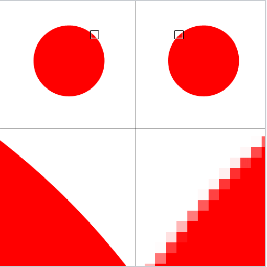

Bitmap- en vectorafbeeldingen
Bitmapafbeelding
Hoe meer pixels per oppervlakte een afbeelding heeft, hoe scherper deze afbeelding is. Een afbeelding die is opgebouwd uit pixels noemen we een bitmapafbeelding.
Bitmapafbeeldingen hebben twee belangrijke eigenschappen. Dit zijn tegelijkertijd ook twee belangrijke nadelen.
- Een bitmapafbeelding kost (veel) opslagruimte. Als je een foto maakt met de camera op je smartphone, kan de afbeelding 5MB groot zijn.
- Als je een bitmapafbeelding gaat inzoomen, worden de losse pixels zichtbaar. Hierdoor is de afbeelding niet meer scherp.
Vectorafbeelding
Een digitale afbeelding valt ook op een andere manier op te bouwen. Dat doe je door niet de waarden van
de pixels op te slaan, maar de vormen waaruit de afbeelding is opgebouwd.
Zoiets wordt een vectorafbeelding genoemd.
In de beschrijving van een vectorafbeelding kan bijvoorbeeld staan dat er een cirkel van een bepaalde
kleur en grootte over een tekst heen moet worden getekend.
Van zowel de tekst als de cirkel komt de absolute grootte niet vast te liggen, alleen de onderlinge
verhouding. Vectorafbeeldingen kunnen door deze flexibiliteit op willekeurige
grootte afgebeeld worden terwijl de resolutie gelijk blijft.
Hieronder zie je links een vectorafbeelding en rechts een bitmapafbeelding

Vectorafbeeldingen zijn dus heel handig als de afbeelding zowel groot als klein scherp moet zijn, zoals
een logo van een bedrijf dat naast heel groot aan de buitenmuur moet
worden gehangen ook nog eens ergens klein moet worden weergegeven.
Het is echter alleen mogelijk om vormen vast te leggen met vectorafbeeldingen, wat vrij nadelig is. Bij
een digitale foto is het niet mogelijk om hem als vector op te slaan.
Dat komt doordat een digitale foto niet uit vormen bestaat, maar uit heel veel verschillende
kleurtinten.
In de digitale schilderkunst wordt naast rasterkunst ook steeds vaker vectorkunst beoefend. Ook worden de twee stijlen wel gecombineerd.